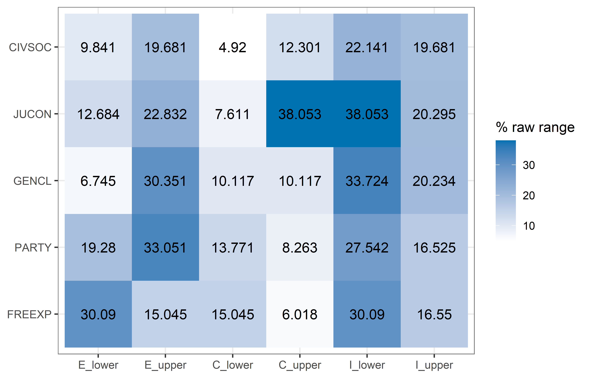
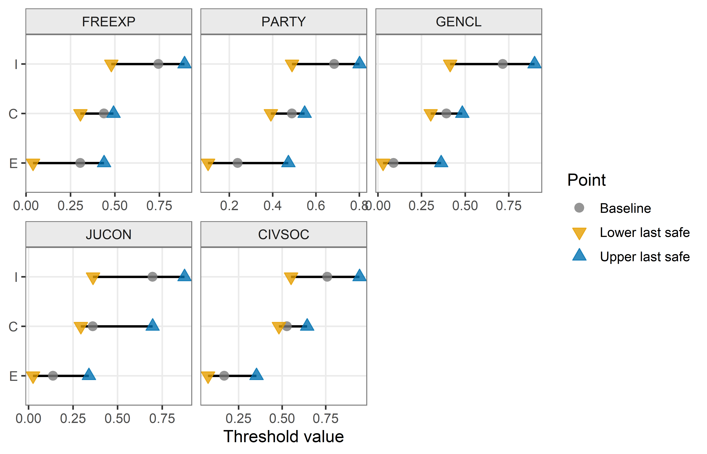
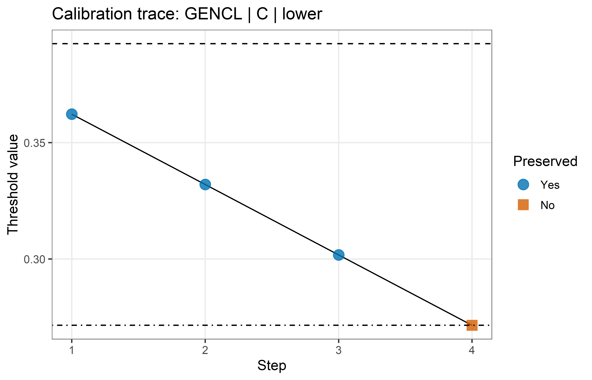

vdem_calib_spec <- list(
FREEXP = list(
raw = "FREEXP",
type = "fuzzy",
method = "direct",
thresholds = FREEXP_th
),
PARTY = list(
raw = "PARTY",
type = "fuzzy",
method = "direct",
thresholds = PARTY_th
),
GENCL = list(
raw = "GENCL",
type = "fuzzy",
method = "direct",
thresholds = GENCL_th
),
JUCON = list(
raw = "JUCON",
type = "fuzzy",
method = "direct",
thresholds = JUCON_th
)
)
vdem_calib_spec_with_outcome <- vdem_calib_spec
vdem_calib_spec_with_outcome$CIVSOC <- list(
raw = "CIVSOC",
type = "fuzzy",
method = "direct",
thresholds = CIVSOC_th
)5 Calibration
For our first—and arguably one of the most important—single-diagnostic appraisals, calib.test() examines how one or more selected QCA solution formulas respond to changes in the qualitative anchors used for calibration. A single function call may include several condition sets, the outcome set, multiple eligible anchors, and multiple solution types. It then expands this request into separate lower and upper diagnostic paths for every selected set–anchor combination and every monitored solution formula. Each path records the last tested anchor value that preserves the corresponding baseline formula and, when one exists, the first proposed value at which the formula changes or another stopping condition is encountered.
The diagnostic addresses the sensitivity of the set memberships established through calibration. Moving an anchor changes one or more cases’ membership scores in the selected set. Those changes may alter the cases’ membership in truth-table configurations, the configurations’ consistency of sufficiency and outcome assignments, the distinction between observed configurations and logical remainders, and, ultimately, the solution formula obtained through minimization (Ragin 2008; Schneider and Wagemann 2012).
At every tested anchor value, calib.test() therefore recalibrates the selected set, reconstructs the truth table, repeats the requested minimization, and compares the selected solution formula with its baseline counterpart.
Although one call can generate many diagnostic paths, each path is evaluated independently. calib.test() does not evaluate the consequences of moving several anchors simultaneously. Indeed, in such cases, the full Cartesian product grows exponentially and quickly becomes unmanageable. With \(k\) movable anchors and \(m\) candidate values per anchor, there are \(m^k\) combinations before even considering alternative inclusion cutoffs, frequency cutoffs, or solution types.
Consider a simple and relatively constrained example: if only four anchors are each allowed to take five candidate values, this produces \(5^4=625\) joint calibration specifications. But if four sets are tested across all three qualitative anchors, the resulting twelve-dimensional search contains \(5^{12}=244,140,625\) specifications. This combinatorial growth makes exhaustive joint testing impractical even for moderately sized analyses. More on this in the Alternative-Set Diagnostics chapter.
For now, within a particular path, only one anchor moves in one direction; the remaining anchor thresholds, the calibrated memberships of the untested sets, the cases, truth-table cutoffs, and minimization and solution-selection rules remain fixed. The resulting collection therefore maps one-at-a-time formula-preservation boundaries across all the sets, anchors, directions, and solution types requested by the user.
- Example: The expanded application later in this chapter selects all four condition sets and the outcome set, requests the full-nonmembership, crossover, and full-membership anchors, and monitors the conservative, parsimonious, and intermediate solutions.
calib.test()generates the complete collection of lower and upper paths from that single call; the user does not need a separate call for every set, anchor, direction, or solution type.
5.1 How calib.test() Works
This subsection describes the function at length. If you’re the kind of person who learns more from getting your hands dirty than from reading boring manuals, feel free to skip ahead to A Narrow First Diagnostic. If anything still seems nebulous or difficult to grasp, come back to this subsection and read it carefully.
5.1.1 Initial Requirements
Changing a calibration anchor requires access to the raw empirical values from which set memberships were originally calculated. For this reason, calib.test() requires both raw.data and calib.data, together with outcome, conditions, and calib_spec. The two data frames serve different purposes, as raw.data provides the empirical values that will be recalibrated, and calib.data supplies the analysis frame into which the reconstructed memberships are placed. The calibrated data frame also retains the calibrated outcome when the outcome calibration is not being tested, along with any additional columns needed by the QCA workflow.
The outcome argument identifies one calibrated outcome column in calib.data, while conditions identifies the complete nonempty collection of calibrated condition columns used to construct the truth table. The outcome can be supplied as a character string or an unquoted column name; the conditions can likewise be supplied as a character vector or as unquoted names. The outcome must remain outside conditions, even when its own calibration will be tested later in the call.
Before moving any anchor, calib.test() reconstructs the baseline memberships of every condition named in conditions. It does so by applying the corresponding instructions in calib_spec to the values in raw.data. When test.outcome = TRUE, the function reconstructs the outcome memberships in the same way. It is the calibration instructions supplied through calib_spec—including the baseline thresholds—and not the condition memberships already stored in calib.data that define the reconstructed baseline calibration. Those instructions should reproduce the intended reference memberships; otherwise, the diagnostic would begin from a different calibrated analysis before the first anchor movement is even attempted!
This reconstruction also explains why the rows of raw.data and calib.data must refer to the same cases in the same order. For each case, the function takes an empirical value from raw.data, calculates a new set-membership score, and places that score in the corresponding position of the analysis frame. Accordingly, the two data frames must contain the same number of cases. If they use informative row names, those names must be unique and identical in the same order. When both inputs retain only the default row names 1, ..., n, the pairing is purely positional, so neither data frame may be reordered independently after the raw and calibrated versions have been constructed.
The calib_spec argument supplies the complete instructions for that reconstruction through a named list containing one calibration entry for every set that the function must rebuild. For a condition-only diagnostic, the list must contain exactly one entry for every condition in conditions, including conditions whose anchors will remain fixed throughout the search. When the outcome calibration is also tested, calib_spec must contain those condition entries plus one entry named after the outcome. The outcome itself remains separate from conditions, preserving the distinction between the outcome set and the condition sets used to construct the truth table.
Each calibration entry contains the following elements:
rawis required and names the column inraw.datafrom which membership will be calculated.typeis likewise needed, and accepts"fuzzy"or"f"for a fuzzy set and"crisp"or"c"for a crisp set.thresholdsis also required and supplies the baseline qualitative anchors. Crisp calibration requires one threshold. Direct fuzzy calibration requires either three or six consistently ordered thresholds, while indirect fuzzy calibration accepts one or more distinct, finite thresholds, which the function orders and labelsT1,T2, and so forth.methodis optional. Fuzzy calibration accepts"direct", the default, or"indirect"; crisp calibration is direct.calibrateis also optional and accepts a named list of additional arguments passed toQCA::calibrate(). The function itself supplies the raw vector, calibration type, and thresholds, socalibratecannot replacex,type, orthresholds.
The reference analysis uses direct fuzzy calibration with three qualitative anchors for every condition and for the outcome. The first object below is sufficient when only condition calibrations may be tested. The second extends that specification with the outcome calibration needed by test.outcome = TRUE:
Every condition remains in vdem_calib_spec even when only one of them will have its anchors moved. This is because calib.test() first reconstructs the complete baseline condition matrix and only then begins the perturbation search. The next set of arguments determines which parts of that reconstructed calibration are allowed to change.
5.1.2 Selecting Sets and Calibration Anchors
Once the complete calibration specification is available, test.conditions and test.outcome define the scope of the perturbation, determining which calibrated sets may change. test.conditions defaults to the complete conditions vector and accepts any nonempty subset of those names. Conditions omitted from test.conditions remain in every reconstructed truth table, but their calibration anchors remain fixed at the baseline thresholds. test.outcome is a single logical value that defaults to FALSE. Setting it to TRUE adds the outcome calibration to the search without adding the outcome to conditions.
Together, these two arguments permit condition-only, mixed, and outcome-only diagnostics. To examine only the outcome calibration, use:
test.conditions = NULL,
test.outcome = TRUEtest.conditions = NULL is accepted only in this outcome-only arrangement, and every call must select at least one calibrated set for perturbation.
After the sets have been selected, anchors_to_test determines which qualitative anchors within those sets will generate search paths. Its default, NULL, tests every anchor implied by each selected set’s calibration form. Supplying a character vector narrows the search to the named anchors that are eligible for each selected set:
| Calibration form | Eligible anchors |
|---|---|
| Crisp calibration | T |
| Direct fuzzy calibration with three thresholds | E, C, I |
| Direct fuzzy calibration with six thresholds | E1, C1, I1, I2, C2, E2 |
| Indirect fuzzy calibration | T1, T2, … |
For the three-threshold direct fuzzy calibration used in the reference analysis, E marks the threshold for full nonmembership, or the exclusion anchor; C, the crossover at which membership is neither more in nor more out of the set; and I, the threshold for full membership, or the inclusion anchor. When anchors_to_test is supplied explicitly, it must include at least one eligible label for each selected set. This requirement prevents a set from being selected for perturbation without generating any diagnostic path.
5.1.3 Defining the Search Grid
Each selected anchor produces two diagnostic paths. The lower path repeatedly subtracts the chosen movement size from the baseline threshold, while the upper one (shockingly) repeatedly adds it. Throughout either path, only the selected anchor moves; the remaining anchors of that set stay at their baseline thresholds.
The size of each movement is controlled by unit_step, whose default is NULL. Under this default, qcaERT calculates a separate scale-aware increment for every set in the complete calibration specification. For a fuzzy set, the function finds the smallest distinct gap among the baseline thresholds and divides that gap by unit_step_divisor, which defaults to 10. For a crisp set, it takes the shorter distance from the threshold to either limit of the observed raw-data range and divides that distance by the same divisor. Because unit_step_divisor is used only for this automatic calculation, it matters only when unit_step = NULL; in that setting, it must be a single positive finite number.
A positive numeric value supplied through unit_step replaces the automatic calculation. A single value applies the same movement size to every set in the calibration specification. A vector instead supplies set-specific increments and must follow the order of all conditions; when test.outcome = TRUE, the vector must also include the outcome increment in its final position. The vector is therefore aligned with the complete calibration specification, not merely with the subset selected through test.conditions.
The other part of the search grid is its length. max_steps is a positive integer that defaults to 20 and limits the number of proposed movements separately for every anchor, direction, and monitored solution type. Movement size and path length should be considered together. Smaller increments inspect the raw scale more finely but may require more steps to reach a substantively meaningful distance from the baseline. Conversely, larger increments cover the scale more quickly, although the values between successive movements remain untested.
After each admissible threshold has been evaluated, the current path continues until one of the following occurs:
- the selected solution formula differs from its baseline counterpart;
- truth-table construction, exclusion, or minimization fails;
- the next proposed value would cross another anchor or leave the observed raw-data range; or
- the path uses all movements permitted by
max_steps.
When anchor ordering or the raw-data range blocks the next movement, the proposed value is recorded as a feasibility boundary. It is not submitted to calibration, truth-table construction, or minimization because it would not constitute an admissible calibration specification.
5.1.4 Holding the QCA Comparison Constant
The purpose of a calibration diagnostic is to change the calibration while holding the remaining QCA comparison rules constant. The solution, which_M1, and i_mode selectors retain the meanings established in the preceding chapter. Here, their calibration-specific consequence is that the same solution type, stored model position, and intermediate-branch selection rule are applied after every admissible anchor movement. Applying the same selectors repeatedly makes the comparisons reproducible, but, of course, it does not resolve model ambiguity when a minimization returns more than one admissible model—the function can’t have all the fun, after all.
With its default solution = "all", calib.test() monitors conservative and parsimonious solutions. The dir.exp argument defaults to NULL; supplying directional expectations through it adds the intermediate solution to an all-solution diagnostic. These expectations must correspond to the order of conditions and can be supplied as a character vector, a single minimize-style character string, or a matrix or data frame with one column per condition. An intermediate-only diagnostic requires dir.exp, whereas conservative-only and parsimonious-only diagnostics require it to remain NULL.
Then, every monitored solution type receives an independent path. A change in the conservative formula therefore stops only the conservative search for that set, anchor, and direction. The parsimonious and intermediate searches continue until each reaches its own stopping point.
For ordinary calibration diagnostics, include should be left at its default of NULL. The function will then apply the minimization convention appropriate to each requested solution type: conservative minimization uses include = "" and does not admit logical remainders as simplifying assumptions, while parsimonious and intermediate minimization use include = "?". When only one solution type is monitored, the corresponding value may also be supplied explicitly: include = "" is accepted for a conservative-only diagnostic, and include = "?" for a parsimonious- or intermediate-only diagnostic. Neither value changes the analysis already implied by solution; an incompatible value produces an error. With solution = "all", include must remain NULL so that the function can apply the appropriate convention separately to each solution type.
The presence of
includeis purposefully redundant, since, once the solution type has been selected, include cannot independently change the analysis. An explicit value can therefore only confirm the convention already implied by solution; an incompatible value produces an error. The argument remains visible for didactic reasons, as the treatment of logical remainders is too important to disappear silently behind the solution label. Even when qcaERT determines the value, the researcher should understand why conservative minimization excludes logical remainders from the minimization and why parsimonious and intermediate minimization admit them as potential simplifying assumptions. For these last two solutions, the exclusion controls determine how untenable simplifying assumptions are handled as recalibration changes the truth table.
The central choice is whether the exclusion rule should follow each reconstructed truth table, one fixed exclusion object should be reused, or no simplifying assumptions should be excluded.
"recompute"rerunsQCA::findRows()on every perturbed truth table, preserving the exclusion rule while allowing the particular excluded configurations to change. Its companionexclude_recomputeis a named list of arguments forQCA::findRows()and defaults tolist(type = 2), which identifies contradictory simplifying assumptions. The less common exclusion rules are shown later, when the expanded diagnostic makes their syntax concrete."static"reuses the exact exclusion object supplied throughexclude_static. It preserves the baseline pool of excluded configurations even when the perturbed truth table would classify those configurations differently."none"applies no exclusion rule and therefore permits every simplifying assumption otherwise admitted throughinclude = "?".
“W-wait, the default is
list(type = 2)?” you ask. Yes, this is an intentional, slightly opinionated methodological choice. Whenever parsimonious or intermediate solutions are monitored, qcaERT appliesQCA::findRows(type = 2)to the baseline truth table and excludes the contradictory simplifying assumptions it identifies. Researchers who do not want contradictory simplifying assumptions excluded must state that choice explicitly by settingexclude_mode = "none".
The truth-table arguments incl.cut and n.cut remain fixed throughout the calibration search, and both default to 1. Holding them fixed here is essential, since the diagnostic is intended to trace the consequences of changing calibration anchors without modifying truth-table assignment rules at the same time. Leave this task to the altset.test() function!
Additional truth-table and minimization arguments supplied through ... are held constant across every reconstructed analysis. In the reference application, this allows settings such as complete and sort.by to govern all perturbed truth tables in the same way.
The progress argument is a logical display control that defaults to TRUE and, in an interactive R session, shows a (definitely always funny) text progress bar. The bar advances when a complete set-anchor-direction-solution path finishes, not after each movement within that path.
5.1.5 Inspecting the Returned Evidence
After the search is complete, the resulting calib_test object can be inspected in three ordinary ways. Printing the object provides an overview of the diagnostic and its formula-preservation boundaries, as.data.frame() returns the complete reporting table, and plot() presents the same diagnostic evidence as interval, heatmap, or trace views. None of these inspection methods recalibrates a set or repeats the QCA analysis.
When solution = "all", result_shape determines how the reporting table organizes the independently monitored solution types. Its default, "wide", keeps one record for each set–anchor–direction path and places the boundaries for the different solution types in separate prefixed columns. The alternative "long" layout gives each solution type its own record for the same set–anchor–direction path. The object also retains the stepwise and baseline records behind those boundaries. They are useful when an unusual boundary or stopping reason requires closer examination, but they are not needed for the first interpretation.
5.2 A Narrow First Diagnostic
With the function’s main choices now established, we can begin with a limited, friendly application. The first diagnostic perturbs the full-nonmembership, crossover, and full-membership anchors of GENCL, the set of women’s civil liberties, while monitoring only the conservative solution.
vdem_calib_gencl_con <- calib.test(
raw.data = vdem_raw,
calib.data = vdem_calib,
outcome = vdem_outcome,
conditions = vdem_conds,
calib_spec = vdem_calib_spec,
test.conditions = "GENCL",
anchors_to_test = c("E", "C", "I"),
unit_step = NULL,
unit_step_divisor = 10,
max_steps = 5,
incl.cut = vdem_incl_cut,
n.cut = vdem_n_cut,
solution = "conservative",
which_M = 1,
complete = TRUE,
sort.by = c("incl", "n")
)Because three anchors are tested in two directions, this call produces six independent paths. It retains the reference truth-table cutoffs, calculates the movement size automatically with a divisor of 10, and permits five attempted movements in each direction. This smaller search gives us enough evidence to learn how the boundary table works before expanding to the complete scan.
For GENCL, the smallest gap among the three baseline thresholds is:
vdem_gencl_anchor_gap <- min(
diff(
sort(vdem_calib_spec$GENCL$thresholds)
)
)
vdem_gencl_anchor_gap
#> [1] 0.3025And dividing that gap by 10 produces a movement size of 0.03025:
vdem_gencl_anchor_gap / 10
#> [1] 0.03025The same increment is then applied independently along the lower and upper paths of each selected anchor.
5.2.1 Reading the Boundary Table
vdem_calib_gencl_con
#> <calib_test>
#> Outcome test: calibration robustness
#> Solution: conservative
#> Monitored solutions: conservative
#> which_M: 1
#> Test conditions: GENCL
#> Anchors tested: E, C, I
#> Max steps: 5
#>
#> Result
#> condition type method anchor direction start last_safe first_failing step_unit steps total_delta pct_raw_range reason
#> GENCL f direct E lower 0.0900 0.02950 -0.00075 0.03025 2 -0.06050 6.744705 feasibility_boundary
#> GENCL f direct E upper 0.0900 0.24125 NA 0.03025 5 0.15125 16.861761 run_budget_exhausted
#> GENCL f direct C lower 0.3925 0.30175 0.27150 0.03025 3 -0.09075 10.117057 CON:formula_changed
#> GENCL f direct C upper 0.3925 0.48325 0.51350 0.03025 3 0.09075 10.117057 CON:formula_changed
#> GENCL f direct I lower 0.7155 0.56425 NA 0.03025 5 -0.15125 16.861761 run_budget_exhausted
#> GENCL f direct I upper 0.7155 0.86675 NA 0.03025 5 0.15125 16.861761 run_budget_exhausted
#>
#> Summary
#> Rows: 6
#> Conditions covered: GENCL
#> Bounds are available in x$bounds.As you can see, printing the object directly provides a clear overview of the diagnostic, identifying the monitored conservative solution, the selected condition and anchors, and the five-step path budget. The six displayed records correspond to the lower and upper paths for E, C, and I. To keep this console view compact, the print method omits set and role and labels the raw source column as condition.
Now, the as.data.frame() method below exposes the complete table in all its redundant glory.
as.data.frame(vdem_calib_gencl_con)
#> set role raw type method anchor direction start last_safe first_failing step_unit steps total_delta pct_raw_range reason
#> 1 GENCL condition GENCL f direct E lower 0.0900 0.02950 -0.00075 0.03025 2 -0.06050 6.744705 feasibility_boundary
#> 2 GENCL condition GENCL f direct E upper 0.0900 0.24125 NA 0.03025 5 0.15125 16.861761 run_budget_exhausted
#> 3 GENCL condition GENCL f direct C lower 0.3925 0.30175 0.27150 0.03025 3 -0.09075 10.117057 CON:formula_changed
#> 4 GENCL condition GENCL f direct C upper 0.3925 0.48325 0.51350 0.03025 3 0.09075 10.117057 CON:formula_changed
#> 5 GENCL condition GENCL f direct I lower 0.7155 0.56425 NA 0.03025 5 -0.15125 16.861761 run_budget_exhausted
#> 6 GENCL condition GENCL f direct I upper 0.7155 0.86675 NA 0.03025 5 0.15125 16.861761 run_budget_exhaustedIn this full table, set names the calibrated set under perturbation, role distinguishes a condition from the outcome, and raw names the empirical source column. The columns type, method, and anchor identify the calibration form and the qualitative anchor being moved. The type codes f and c denote fuzzy and crisp calibrations. Together with direction, these columns identify one set–anchor–direction path for the selected conservative solution.
The remaining columns report how the search developed along that path:
startis the baseline threshold from which the path begins, whilelast_safeis the furthest tested threshold that still preserves the selected baseline formula.first_failingrecords the next proposed value when the path encounters a formula change, a computational failure, or a feasibility boundary. It remains missing when the search budget is exhausted before any such stopping point is reached. In the case of a feasibility boundary, this value was proposed but not analyzed.step_unitgives the threshold increment, andstepscounts the movements that were actually analyzed and preserved the formula.total_deltais calculated aslast_safe - start, so it is negative along a lower path and positive along an upper path.pct_raw_rangeexpresses the absolute magnitude of that movement as a percentage of the observed raw-data range for the selected set.reasonidentifies why the path stopped, allowing the numerical boundary to be interpreted as a formula change, a computational problem, a feasibility limit, or an exhausted search budget.
We can now read the six paths anchor by anchor. For the full-nonmembership anchor E, the lower path preserves the conservative formula through two movements, from 0.09000 to 0.02950. The next proposed value, -0.00075, lies beyond the observed raw-data range. It is therefore recorded as a feasibility_boundary without being recalibrated or submitted to the QCA workflow.
In the upper direction, the path reaches 0.24125 after all five movements without changing the formula. The run_budget_exhausted reason therefore tells us that the formula was preserved throughout the tested values, but no upper formula-changing or feasibility boundary was located within the five-step search.
The crossover paths locate the nearest formula-changing thresholds observed in this one-at-a-time search. From the baseline crossover of 0.39250, the lower path preserves the conservative formula through 0.30175 and first changes it at 0.27150; the upper path preserves it through 0.48325 and first changes it at 0.51350. The two CON:formula_changed reasons refer, as indicated by CON:, specifically to a change in the selected conservative solution formula.
The full-membership paths present a different pattern, as both exhaust their five-step budgets without a formula change, reaching last-safe values of 0.56425 below and 0.86675 above the baseline anchor of 0.71550. The evidence therefore distinguishes the located crossover formula changes from an explored full-membership interval in which no stopping boundary was reached.
Throughout these six paths, preservation is assessed through the selected Boolean solution formula rather than through its parameters of fit. Recalibrating GENCL changes cases’ membership in that set even when the minimized formula remains unchanged. Those membership changes can alter membership in the prime implicants and in their union, the complete solution. Prime-implicant consistency, PRI, raw coverage, and unique coverage may therefore move within a formula-preserving path, as may solution consistency, solution PRI, and solution coverage.
5.3 Expanding the Diagnostic Scan
The narrow application contains only six paths, but the number grows quickly once more conditions and solution types are included. For each of the \(S\) selected sets, let \(A_s\) denote the number of eligible anchors included in the search. Because every anchor is examined in two directions and every monitored solution type receives an independent path, the maximum number of perturbed QCA analyses is:
\[ \left(\sum_{s=1}^{S} A_s\right) \times 2\text{ directions} \times \text{monitored solution types} \times \text{maximum steps}. \]
Writing the expression as a sum allows different sets to contribute different numbers of eligible anchors, as would occur if crisp, three-threshold fuzzy, six-threshold fuzzy, or indirect calibrations appeared in the same analysis.
In the expanded application below, each of the four conditions and the outcome contributes three eligible anchors. Substituting these values into the expression above gives \((5 \times 3 \times 2 \times 3 = 90)\) directional solution paths. With max_steps = 20, the function may therefore attempt as many as \((90 \times 20 = 1{,}800)\) perturbed QCA analyses after reconstructing the baselines.
As expected, this may lead to longer runtimes. Using
progress = TRUEis therefore recommended so that you can follow the calculations and, consequently, keep your cortisol levels in check.
Before running that larger diagnostic, the following forms show how to supply the three previously established exclusion modes to the function. Recomputing contradictory simplifying assumptions preserves the exclusion criterion while allowing the particular excluded configurations to follow each perturbed truth table:
exclude_mode = "recompute",
exclude_recompute = list(type = 2)A static exclusion object instead preserves the exact configurations excluded from the reference truth table, regardless of how recalibration alters the reconstructed truth table, thereby emulating the approach used by the SetMethods package as of version 4.1:
exclude_mode = "static",
exclude_static = findRows(vdem_tt, type = 2)To apply no exclusion rule to the simplifying assumptions admitted by parsimonious or intermediate minimization, use:
exclude_mode = "none"If a research design calls for another QCA::findRows() rule, the recomputation mode can apply it as well. The following less common forms are included as a reference; none is needed for the current application. Type 1 requires the Boolean expression whose subset configurations should be excluded:
exclude_mode = "recompute",
exclude_recompute = list(
type = 1,
expression = "FREEXP*PARTY*~GENCL" # any supplied expression
)Type 3 requests simultaneous subset relations:
exclude_mode = "recompute",
exclude_recompute = list(type = 3)Type 0 requests every category and therefore also requires an expression for its type-1 component:
exclude_mode = "recompute",
exclude_recompute = list(
type = 0,
expression = "FREEXP*PARTY*~GENCL" # any supplied expression
)Selected categories can be combined explicitly:
exclude_mode = "recompute",
exclude_recompute = list(type = c(2, 3))The reference scan uses the first rule, recomputing contradictory simplifying assumptions for every perturbed truth table. It also retains the long reporting layout so that the boundary of each solution type remains a separate record:
vdem_calib_sets_all <- calib.test(
raw.data = vdem_raw,
calib.data = vdem_calib,
outcome = vdem_outcome,
conditions = vdem_conds,
calib_spec = vdem_calib_spec_with_outcome,
test.conditions = vdem_conds,
test.outcome = TRUE,
anchors_to_test = c("E", "C", "I"),
unit_step = NULL,
unit_step_divisor = 10,
max_steps = 20,
incl.cut = vdem_incl_cut,
n.cut = vdem_n_cut,
solution = "all",
dir.exp = vdem_dir_exp,
exclude_mode = "recompute",
exclude_recompute = list(type = 2),
which_M = 1,
i_mode = "C1P1",
result_shape = "long",
complete = TRUE,
sort.by = c("incl", "n")
)5.3.1 Comparing Solution Types
The complete scan contains ninety path records, so we will first isolate the six GENCL crossover records (“C”). They allow the conservative, parsimonious, and intermediate formulas to be compared under the same lower and upper anchor movements:
vdem_calib_sets_all_df <- as.data.frame(vdem_calib_sets_all)
subset(
vdem_calib_sets_all_df,
set == "GENCL" & anchor == "C"
)
#> solution_type set role raw type method anchor direction start last_safe first_failing step_unit steps total_delta pct_raw_range reason
#> 15 conservative GENCL condition GENCL f direct C lower 0.3925 0.30175 0.27150 0.03025 3 -0.09075 10.11706 CON:formula_changed
#> 16 conservative GENCL condition GENCL f direct C upper 0.3925 0.48325 0.51350 0.03025 3 0.09075 10.11706 CON:formula_changed
#> 45 parsimonious GENCL condition GENCL f direct C lower 0.3925 0.39250 0.36225 0.03025 0 0.00000 0.00000 PAR:formula_changed
#> 46 parsimonious GENCL condition GENCL f direct C upper 0.3925 0.48325 0.51350 0.03025 3 0.09075 10.11706 PAR:formula_changed
#> 75 intermediate GENCL condition GENCL f direct C lower 0.3925 0.30175 0.27150 0.03025 3 -0.09075 10.11706 INT:formula_changed
#> 76 intermediate GENCL condition GENCL f direct C upper 0.3925 0.48325 0.51350 0.03025 3 0.09075 10.11706 INT:formula_changedAll six paths begin at the crossover of 0.39250. The conservative and intermediate formulas share the same observed lower and upper boundaries: each lower path preserves its baseline formula through 0.30175 and changes at 0.27150, while each upper path preserves the formula through 0.48325 and changes at 0.51350. The parsimonious upper path reaches the same boundary, but its lower path changes on the first attempted movement to 0.36225; its last_safe value consequently remains at the baseline crossover and steps is zero.
The different lower boundary cannot be inferred merely from whether GENCL appears in a displayed formula. The conservative and intermediate solutions contain GENCL, whereas parsimonious minimization has removed it from both prime implicants through simplifying assumptions. Recalibrating GENCL nevertheless changes set memberships and truth-table assignments and may alter the logical remainders and exclusions entering parsimonious minimization. The parsimonious formula can therefore change even though GENCL is absent from its baseline prime implicants.
The complete tables—vdem_calib_sets_all and the newly created vdem_calib_sets_all_df—remain available for inspecting the full appraisal.
vdem_calib_sets_all
#> <calib_test>
#> Outcome test: calibration robustness
#> Solution: all
#> Monitored solutions: conservative, parsimonious, intermediate
#> which_M: 1
#> i_mode: C1P1
#> Test conditions: FREEXP, PARTY, GENCL, JUCON
#> Test outcome: CIVSOC
#> Anchors tested: E, C, I
#> Max steps: 20
#>
#> Result
#> solution_type condition type method anchor direction start last_safe first_failing step_unit steps total_delta pct_raw_range reason
#> conservative FREEXP f direct E lower 0.3055 0.03950 NA 0.01330 20 -0.26600 30.090498 run_budget_exhausted
#> conservative FREEXP f direct E upper 0.3055 0.43850 0.45180 0.01330 10 0.13300 15.045249 feasibility_boundary
#> conservative FREEXP f direct C lower 0.4385 0.30550 0.29220 0.01330 10 -0.13300 15.045249 feasibility_boundary
#> conservative FREEXP f direct C upper 0.4385 0.49170 0.50500 0.01330 4 0.05320 6.018100 CON:formula_changed
#> conservative FREEXP f direct I lower 0.7450 0.47900 NA 0.01330 20 -0.26600 30.090498 run_budget_exhausted
#> conservative FREEXP f direct I upper 0.7450 0.89130 0.90460 0.01330 11 0.14630 16.549774 feasibility_boundary
#> conservative PARTY f direct E lower 0.2385 0.10200 0.08250 0.01950 7 -0.13650 19.279661 feasibility_boundary
#> conservative PARTY f direct E upper 0.2385 0.47250 0.49200 0.01950 12 0.23400 33.050847 feasibility_boundary
#> conservative PARTY f direct C lower 0.4890 0.39150 0.37200 0.01950 5 -0.09750 13.771186 CON:formula_changed
#> conservative PARTY f direct C upper 0.4890 0.54750 0.56700 0.01950 3 0.05850 8.262712 CON:formula_changed
#> conservative PARTY f direct I lower 0.6840 0.48900 0.46950 0.01950 10 -0.19500 27.542373 feasibility_boundary
#> conservative PARTY f direct I upper 0.6840 0.80100 0.82050 0.01950 6 0.11700 16.525424 feasibility_boundary
#> conservative GENCL f direct E lower 0.0900 0.02950 -0.00075 0.03025 2 -0.06050 6.744705 feasibility_boundary
#> conservative GENCL f direct E upper 0.0900 0.36225 0.39250 0.03025 9 0.27225 30.351171 feasibility_boundary
#> conservative GENCL f direct C lower 0.3925 0.30175 0.27150 0.03025 3 -0.09075 10.117057 CON:formula_changed
#> conservative GENCL f direct C upper 0.3925 0.48325 0.51350 0.03025 3 0.09075 10.117057 CON:formula_changed
#> conservative GENCL f direct I lower 0.7155 0.41300 0.38275 0.03025 10 -0.30250 33.723523 feasibility_boundary
#> conservative GENCL f direct I upper 0.7155 0.89700 0.92725 0.03025 6 0.18150 20.234114 feasibility_boundary
#> conservative JUCON f direct E lower 0.1370 0.02525 0.00290 0.02235 5 -0.11175 12.684449 feasibility_boundary
#> conservative JUCON f direct E upper 0.1370 0.33815 0.36050 0.02235 9 0.20115 22.832009 feasibility_boundary
#> conservative JUCON f direct C lower 0.3605 0.29345 0.27110 0.02235 3 -0.06705 7.610670 CON:formula_changed
#> conservative JUCON f direct C upper 0.3605 0.69575 0.71810 0.02235 15 0.33525 38.053348 feasibility_boundary
#> conservative JUCON f direct I lower 0.6965 0.36125 0.33890 0.02235 15 -0.33525 38.053348 feasibility_boundary
#> conservative JUCON f direct I upper 0.6965 0.87530 0.89765 0.02235 8 0.17880 20.295119 feasibility_boundary
#> conservative CIVSOC f direct E lower 0.1670 0.07440 0.05125 0.02315 4 -0.09260 9.840595 CON:formula_changed
#> conservative CIVSOC f direct E upper 0.1670 0.35220 0.37535 0.02315 8 0.18520 19.681190 CON:formula_changed
#> conservative CIVSOC f direct C lower 0.5275 0.48120 0.45805 0.02315 2 -0.04630 4.920298 CON:formula_changed
#> conservative CIVSOC f direct C upper 0.5275 0.64325 0.66640 0.02315 5 0.11575 12.300744 CON:formula_changed
#> conservative CIVSOC f direct I lower 0.7590 0.55065 0.52750 0.02315 9 -0.20835 22.141339 feasibility_boundary
#> conservative CIVSOC f direct I upper 0.7590 0.94420 0.96735 0.02315 8 0.18520 19.681190 feasibility_boundary
#> parsimonious FREEXP f direct E lower 0.3055 0.25230 0.23900 0.01330 4 -0.05320 6.018100 PAR:formula_changed
#> parsimonious FREEXP f direct E upper 0.3055 0.43850 0.45180 0.01330 10 0.13300 15.045249 feasibility_boundary
#> parsimonious FREEXP f direct C lower 0.4385 0.30550 0.29220 0.01330 10 -0.13300 15.045249 feasibility_boundary
#> parsimonious FREEXP f direct C upper 0.4385 0.49170 0.50500 0.01330 4 0.05320 6.018100 PAR:formula_changed
#> parsimonious FREEXP f direct I lower 0.7450 0.47900 NA 0.01330 20 -0.26600 30.090498 run_budget_exhausted
#> parsimonious FREEXP f direct I upper 0.7450 0.89130 0.90460 0.01330 11 0.14630 16.549774 feasibility_boundary
#> parsimonious PARTY f direct E lower 0.2385 0.10200 0.08250 0.01950 7 -0.13650 19.279661 feasibility_boundary
#> parsimonious PARTY f direct E upper 0.2385 0.47250 0.49200 0.01950 12 0.23400 33.050847 feasibility_boundary
#> parsimonious PARTY f direct C lower 0.4890 0.45000 0.43050 0.01950 2 -0.03900 5.508475 PAR:formula_changed
#> parsimonious PARTY f direct C upper 0.4890 0.54750 0.56700 0.01950 3 0.05850 8.262712 PAR:formula_changed
#> parsimonious PARTY f direct I lower 0.6840 0.48900 0.46950 0.01950 10 -0.19500 27.542373 feasibility_boundary
#> parsimonious PARTY f direct I upper 0.6840 0.80100 0.82050 0.01950 6 0.11700 16.525424 feasibility_boundary
#> parsimonious GENCL f direct E lower 0.0900 0.02950 -0.00075 0.03025 2 -0.06050 6.744705 feasibility_boundary
#> parsimonious GENCL f direct E upper 0.0900 0.36225 0.39250 0.03025 9 0.27225 30.351171 feasibility_boundary
#> parsimonious GENCL f direct C lower 0.3925 0.39250 0.36225 0.03025 0 0.00000 0.000000 PAR:formula_changed
#> parsimonious GENCL f direct C upper 0.3925 0.48325 0.51350 0.03025 3 0.09075 10.117057 PAR:formula_changed
#> parsimonious GENCL f direct I lower 0.7155 0.41300 0.38275 0.03025 10 -0.30250 33.723523 feasibility_boundary
#> parsimonious GENCL f direct I upper 0.7155 0.89700 0.92725 0.03025 6 0.18150 20.234114 feasibility_boundary
#> parsimonious JUCON f direct E lower 0.1370 0.02525 0.00290 0.02235 5 -0.11175 12.684449 feasibility_boundary
#> parsimonious JUCON f direct E upper 0.1370 0.33815 0.36050 0.02235 9 0.20115 22.832009 feasibility_boundary
#> parsimonious JUCON f direct C lower 0.3605 0.29345 0.27110 0.02235 3 -0.06705 7.610670 PAR:formula_changed
#> parsimonious JUCON f direct C upper 0.3605 0.69575 0.71810 0.02235 15 0.33525 38.053348 feasibility_boundary
#> parsimonious JUCON f direct I lower 0.6965 0.47300 0.45065 0.02235 10 -0.22350 25.368899 PAR:formula_changed
#> parsimonious JUCON f direct I upper 0.6965 0.87530 0.89765 0.02235 8 0.17880 20.295119 feasibility_boundary
#> parsimonious CIVSOC f direct E lower 0.1670 0.07440 0.05125 0.02315 4 -0.09260 9.840595 PAR:formula_changed
#> parsimonious CIVSOC f direct E upper 0.1670 0.32905 0.35220 0.02315 7 0.16205 17.221041 PAR:formula_changed
#> parsimonious CIVSOC f direct C lower 0.5275 0.48120 0.45805 0.02315 2 -0.04630 4.920298 PAR:formula_changed
#> parsimonious CIVSOC f direct C upper 0.5275 0.52750 0.55065 0.02315 0 0.00000 0.000000 PAR:formula_changed
#> parsimonious CIVSOC f direct I lower 0.7590 0.59695 0.57380 0.02315 7 -0.16205 17.221041 PAR:formula_changed
#> parsimonious CIVSOC f direct I upper 0.7590 0.75900 0.78215 0.02315 0 0.00000 0.000000 PAR:formula_changed
#> intermediate FREEXP f direct E lower 0.3055 0.03950 NA 0.01330 20 -0.26600 30.090498 run_budget_exhausted
#> intermediate FREEXP f direct E upper 0.3055 0.43850 0.45180 0.01330 10 0.13300 15.045249 feasibility_boundary
#> intermediate FREEXP f direct C lower 0.4385 0.30550 0.29220 0.01330 10 -0.13300 15.045249 feasibility_boundary
#> intermediate FREEXP f direct C upper 0.4385 0.49170 0.50500 0.01330 4 0.05320 6.018100 INT:formula_changed
#> intermediate FREEXP f direct I lower 0.7450 0.47900 NA 0.01330 20 -0.26600 30.090498 run_budget_exhausted
#> intermediate FREEXP f direct I upper 0.7450 0.89130 0.90460 0.01330 11 0.14630 16.549774 feasibility_boundary
#> intermediate PARTY f direct E lower 0.2385 0.10200 0.08250 0.01950 7 -0.13650 19.279661 feasibility_boundary
#> intermediate PARTY f direct E upper 0.2385 0.47250 0.49200 0.01950 12 0.23400 33.050847 feasibility_boundary
#> intermediate PARTY f direct C lower 0.4890 0.39150 0.37200 0.01950 5 -0.09750 13.771186 INT:formula_changed
#> intermediate PARTY f direct C upper 0.4890 0.54750 0.56700 0.01950 3 0.05850 8.262712 INT:formula_changed
#> intermediate PARTY f direct I lower 0.6840 0.48900 0.46950 0.01950 10 -0.19500 27.542373 feasibility_boundary
#> intermediate PARTY f direct I upper 0.6840 0.80100 0.82050 0.01950 6 0.11700 16.525424 feasibility_boundary
#> intermediate GENCL f direct E lower 0.0900 0.02950 -0.00075 0.03025 2 -0.06050 6.744705 feasibility_boundary
#> intermediate GENCL f direct E upper 0.0900 0.36225 0.39250 0.03025 9 0.27225 30.351171 feasibility_boundary
#> intermediate GENCL f direct C lower 0.3925 0.30175 0.27150 0.03025 3 -0.09075 10.117057 INT:formula_changed
#> intermediate GENCL f direct C upper 0.3925 0.48325 0.51350 0.03025 3 0.09075 10.117057 INT:formula_changed
#> intermediate GENCL f direct I lower 0.7155 0.41300 0.38275 0.03025 10 -0.30250 33.723523 feasibility_boundary
#> intermediate GENCL f direct I upper 0.7155 0.89700 0.92725 0.03025 6 0.18150 20.234114 feasibility_boundary
#> intermediate JUCON f direct E lower 0.1370 0.02525 0.00290 0.02235 5 -0.11175 12.684449 feasibility_boundary
#> intermediate JUCON f direct E upper 0.1370 0.33815 0.36050 0.02235 9 0.20115 22.832009 feasibility_boundary
#> intermediate JUCON f direct C lower 0.3605 0.29345 0.27110 0.02235 3 -0.06705 7.610670 INT:formula_changed
#> intermediate JUCON f direct C upper 0.3605 0.69575 0.71810 0.02235 15 0.33525 38.053348 feasibility_boundary
#> intermediate JUCON f direct I lower 0.6965 0.36125 0.33890 0.02235 15 -0.33525 38.053348 feasibility_boundary
#> intermediate JUCON f direct I upper 0.6965 0.87530 0.89765 0.02235 8 0.17880 20.295119 feasibility_boundary
#> intermediate CIVSOC f direct E lower 0.1670 0.07440 0.05125 0.02315 4 -0.09260 9.840595 INT:formula_changed
#> intermediate CIVSOC f direct E upper 0.1670 0.35220 0.37535 0.02315 8 0.18520 19.681190 INT:formula_changed
#> intermediate CIVSOC f direct C lower 0.5275 0.48120 0.45805 0.02315 2 -0.04630 4.920298 INT:formula_changed
#> intermediate CIVSOC f direct C upper 0.5275 0.64325 0.66640 0.02315 5 0.11575 12.300744 INT:formula_changed
#> intermediate CIVSOC f direct I lower 0.7590 0.55065 0.52750 0.02315 9 -0.20835 22.141339 feasibility_boundary
#> intermediate CIVSOC f direct I upper 0.7590 0.94420 0.96735 0.02315 8 0.18520 19.681190 feasibility_boundary
#>
#> Summary
#> Rows: 90
#> Conditions covered: FREEXP, PARTY, GENCL, JUCON, CIVSOC
#> Bounds are available in x$bounds.5.4 Plotting Calibration Paths
Uhum, that is one big table. But fret not: once the numerical boundaries have been examined, the plot() method for a calib_test object can reorganize the same diagnostic evidence for visual inspection. The method requires ggplot2 and returns a ggplot without recalibrating any set or repeating any minimization. Its type argument defaults to "interval" and also accepts "heatmap" and "trace". Because vdem_calib_sets_all contains more than one monitored solution type, solution_type must select the conservative, parsimonious, or intermediate paths to be displayed. "all" is not accepted here because each chart presents one solution type at a time.
The three views serve different presentation needs. The interval plot retains each anchor’s original measurement scale, the heatmap helps us scan many set–anchor paths at once, and the trace plot shows the tested thresholds in the order in which the diagnostic evaluated them. The controls needed for each view are introduced with the corresponding example below.
5.4.1 Heatmap
The heatmap is a useful starting point when several sets and anchors must be compared at once. The following call selects the conservative paths and uses metric = "pct" to express the absolute displacement from start to last_safe along each path as a percentage of the corresponding raw-data range. These percentage displacements are already stored as absolute values, so abs_delta = TRUE only makes that intention explicit here; it does not change the displayed values. Finally, show_text = TRUE prints the percentage inside each cell:
plot(
vdem_calib_sets_all,
solution_type = "conservative",
type = "heatmap",
metric = "pct",
abs_delta = TRUE,
show_text = TRUE
)
A small heatmap value can have more than one meaning. The selected formula may have changed near the baseline, or anchor ordering or the observed raw-data range may have prevented further movement. Similarly, a path ending in run_budget_exhausted reports only the interval already explored, regardless of whether a more distant formula change exists. This means that the heatmap is useful for locating short explored intervals, but the corresponding table record remains necessary for identifying the stopping mechanism.
In the complete scan, ten conservative paths and ten intermediate paths stop at formula changes, compared with fourteen parsimonious paths. Three parsimonious paths change formula on their first attempted movements: the lower GENCL crossover path and the upper CIVSOC crossover and full-membership paths. These counts describe formula-changing paths among the thirty paths evaluated for each solution type; they do not describe changes in parameters of fit within formula-preserving paths.
5.4.2 Interval Plot
Whereas the percentage heatmap places movements from different raw scales on a common metric, the interval view returns each set to its original threshold scale:
plot(
vdem_calib_sets_all,
solution_type = "conservative",
type = "interval"
)
For every displayed set and anchor with finite lower and upper last_safe values, the segment connects those two observed bounds, while a separate point marks the baseline threshold between or at the edge of them. This form of presentation is useful when you want to expose the raw meaning of the calibration anchors, because, unlike the percentage heatmap, it preserves the original measurement scale and does not invite direct numerical comparison among sets measured in different units.
5.4.3 Trace Plot
The interval view summarizes the two observed bounds but suppresses the sequence of movements that produced them. Below, the trace view restores that sequence for one selected path:
plot(
vdem_calib_sets_all,
solution_type = "conservative",
type = "trace",
set = "GENCL",
anchor = "C",
direction = "lower"
)
This trace marks the baseline GENCL crossover of 0.39250 with a horizontal reference line, then shows the three lower movements that preserve the conservative formula and the formula-changing movement to 0.27150. The trace therefore adds the order of the tested thresholds: the reader can see the successive formula-preserving movements before the stopping point. The preservation criterion itself has not changed, as the trace presents the same path recorded in the table instead of calculating a new diagnostic result.
5.5 Interpretive Boundaries
The boundaries reported by calib.test() remain conditional on the one-at-a-time design established at the beginning of the chapter. Their precise location depends on the movement size, the observed raw-data range, anchor ordering, the search budget, the selected solution type, model position, intermediate-branch selection rule, and exclusion rule. They should therefore be read as boundaries found under one stated diagnostic design, never as “properties” of the calibrated set in isolation.
The reason a path stops is part of that interpretation. A run_budget_exhausted path establishes formula preservation only for the anchor values actually tested; it leaves the location of any more distant formula change unresolved. A feasibility_boundary instead records that the next proposed value would violate the observed raw-data range or the ordering of the calibration anchors. Neither stopping point supplies a substantively warranted calibration threshold.
Finally, as the narrow diagnostic already showed, preserving the selected Boolean solution formula does not mean preserving its parameters of fit. Recalibration may change the cases’ memberships in the sufficient terms, their union, and the outcome even while the Boolean expression remains identical.
Conversely, a formula-changing threshold does not establish that the alternative calibration is conceptually plausible or better.
Evaluating that plausibility requires the substantive definition of the set and, in an ideal—if not idealized—QCA scenario, substantive qualitative knowledge of the cases whose memberships change around the proposed anchor.
The next two chapters hold the calibrated memberships fixed and move the truth table’s frequency and inclusion cutoffs. Joint movements across calibration anchors and truth-table cutoffs are taken up later through the alternative-set diagnostic.
which_Mselects a stored model position, not a particular solution formula. In the perturbation diagnostics, the same position is selected independently from every minimization. Withwhich_M = 1, for example, the function compares the formula stored as M1 at baseline with the formula stored as M1 after each perturbation. It does not search the complete collection of admissible models for the original formula. Consequently, the diagnostic reports a formula change if the baseline formula remains available but moves from M1 to M2; conversely, it reports preservation if M1 remains unchanged while other admissible models change or disappear. This positional rule makes the comparison reproducible, but it provides only a weak treatment of model ambiguity. Whenever a minimization returns several admissible models, the researcher should inspect their prime implicants and report how the choice ofwhich_Mlimits the formula-preservation claim.↩︎